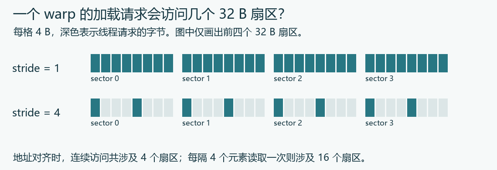
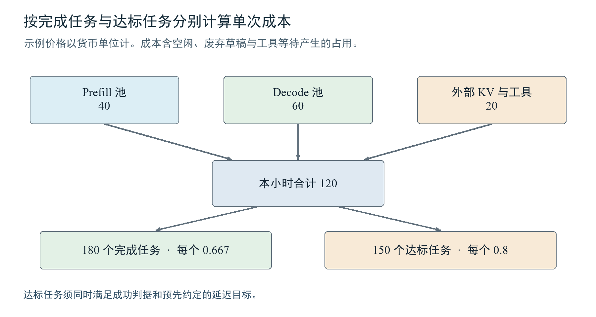

代码块旁的行号链接指向本课采用的提交，仓库及许可见课末。
1 首 token 时延的四个时间戳
用户看到的是网关收到请求到首个非空 token 返回的时间。引擎记录的是自身生命周期。沿 request ID 找到引擎里的批次，才能把入口、调度器和 GPU 上的事件接起来。以下取两条输入长度、缓存状态与输出预算相同的请求，各自以到达网关为零点。
教学请求的事件时间，单位为 ms
| 请求 | 进入引擎 | 获准执行 | 首 token 就绪 | 网关送出 |
|---|---|---|---|---|
| 基准 | 5 | 20 | 70 | 75 |
| 慢样本 | 5 | 85 | 135 | 140 |
两次 TTFT 相差 65 ms。引擎排队从 15 ms 涨到 80 ms，获准执行后均用 50 ms 出 token。下一步查谁占着调度预算。这两条样本只解释了自己的差值，推广到整个窗口还要按长度、命中、到达率分组。
代码 1 vLLM 在不同事件上写入 TTFT、ITL 和阶段直方图
for ttft in iteration_stats.time_to_first_tokens_iter:
self.histogram_time_to_first_token[engine_idx].observe(ttft)
for itl in iteration_stats.inter_token_latencies_iter:
self.histogram_inter_token_latency[engine_idx].observe(itl)
for finished_request in iteration_stats.finished_requests:
self.counter_request_success[finished_request.finish_reason][
engine_idx
].inc()
self.histogram_e2e_time_request[engine_idx].observe(
finished_request.e2e_latency
)
self.histogram_queue_time_request[engine_idx].observe(
finished_request.queued_time
)
self.histogram_prefill_time_request[engine_idx].observe(
finished_request.prefill_time
)TTFT 每个产生首 token 的请求贡献一次，ITL 由相邻输出的间隔贡献。阶段统计又在完成请求时上报。当时仍卡在队列里的长请求尚未贡献完成记录，还要看入口计数和最老未完成请求的年龄。
例如两个副本在同一窗口处理 900 和 100 个请求，耗时 ≤100 ms 的各有 891 和 89 个。总体达标率为 980/1000，即 98%。求经典直方图的总体 p99，先按相同桶上界合并计数增量，再在桶内插值。若 SLO 边界恰有桶，可直接计数。各阶段 p99 可能属于不同请求，不能相加重建端到端 p99。
情境 追踪两条输入长度相同的请求，分别以各自的追踪起点为 0。二者都在 5 ms 进入引擎。基准请求在 20 ms 获准、70 ms 首词就绪、75 ms 送出；慢请求的对应时刻为 85、135、140 ms。
问题 本题的 TTFT 从入引擎算到送出。请分别算出两条请求的排队、获准后执行、最后送出三段时间，再找出 65 ms 增量落在哪一段。若要判断这也是线上 p99 变慢的原因，还需要观察哪些请求？
答案
结论 基准的三段为 15、50、5 ms，慢请求为 80、50、5 ms。TTFT 从 70 ms 增至 135 ms，这一对样本的差值全部来自获准前排队。
推导 每一段都用相邻两个时间戳相减，例如慢请求排队为 85−5，执行为 135−85。要解释线上 p99，应在相同观察窗口按长度、缓存冷热和到达负载对齐请求，先计算每条的 TTFT，再检查尾部请求自身的分段。各段各自取 p99 后相加，取到的可能是不同请求。
回看题干 ↑2 调度排队与 KV 页回收
假设连续五个调度周期可用 KV 页降为零，有长请求在等外部 KV 传完才可释放预留页。把页分配、传输完成、回收和 admission 放上同一时间轴。若每次解封都紧随回收，继续查传输。若页仍充足，则查每轮 token 预算、优先级和主机调度间隔。这里列出的是可验证的假设。
代码 2 vLLM 从 prompt 长度扣除已缓存 token
self.histogram_request_num_preemptions[engine_idx].observe(
finished_request.num_preemptions
)
# Calculate prefill KV compute (excludes cached tokens)
prefill_kv_computed = finished_request.num_prompt_tokens - max(
finished_request.num_cached_tokens, 0
)
self.histogram_prefill_kv_computed_request[engine_idx].observe(
prefill_kv_computed
)两个 128K 请求一个命中 120K，另一个全冷。长度相同，给 prefill 队列带来的计算量却不同。还要记录命中层级、传输字节与实际计算 token，才能解释一次远程命中为何仍慢。
PyTorch Profiler 可把框架算子、shape 和发起调用的代码对应起来。选定典型批次，给数据等待、forward、传输提交加范围标记，同时记录设备事件。完整堆栈、shape 和内存记录会扰动时序。定位之后，用平常的配置比较服务延迟。
代码 3 根据 step 序号决定预热、记录和保存
# If wait >> skip_first and we want to grab profiling early, shift left by wait if skip_first_wait is True
if skip_first_wait != 0:
step += wait
num_steps = wait + warmup + active
if repeat > 0 and step / num_steps >= repeat:
return ProfilerAction.NONE
mod_step = step % num_steps
if mod_step < wait:
return ProfilerAction.NONE
elif mod_step < wait + warmup:
return ProfilerAction.WARMUP
else:
return (
ProfilerAction.RECORD
if mod_step < num_steps - 1
else ProfilerAction.RECORD_AND_SAVE
)取 skip_first=1、wait=1、warmup=1、active=2、repeat=1。以零为起点，0 跳过，1 等待，2 预热，3 记录，4 记录并保存，5 起结束本轮采集。若在每个 microbatch 末尾调用 prof.step()，采集窗口的单位也随之变成 microbatch。
↑ 返回知识点目录3 集合通信的到达偏斜
四个 rank 对同组、同序号的 AllReduce 在 190 ms 完成，进入操作的时间为 100、102、104、178 ms。rank 0 记录了最长区间，rank 3 最晚到场。先找 rank 3 在 178 ms 前等待的事件。最后 12 ms 是全员进入后的尾部，早到进程在此前也可能已推进部分通信。

图 18-1 蓝色为 rank 进入 collective 到完成的区间，四行共用同一时标。
代码 4 进程组分别保存已提交、已开始和已完成的序号
::c10d::C10dLoggingData data;
// logging integers
data.integers["pg_id"] = static_cast<int64_t>(pg_->local_id_);
data.integers["rank"] = pg_->rank_;
data.integers["global_rank"] = pg_->globalRank();
data.integers["last_enqueued_work"] = pg_->pgStatus_->lastEnqueuedSeq;
data.integers["last_started_work"] = pg_->pgStatus_->lastStartedSeq;
data.integers["last_completed_work"] = pg_->pgStatus_->lastCompletedSeq;
data.integers["last_enqueued_numel_in"] =
static_cast<int64_t>(pg_->pgStatus_->lastEnqueuedNumelIn);
data.integers["last_enqueued_numel_out"] =
static_cast<int64_t>(pg_->pgStatus_->lastEnqueuedNumelOut);先核对组成员、组标识、序号和操作，再比较进度。序号差能指出谁还未提交，设备事件能揭示已提交的操作在等待哪个 stream。跨机器的单调钟各有原点，要校准时钟，或改用同一 rank 内可比较的时长。
代码 5 看门狗比较工作对象的年龄与超时阈值
bool ProcessGroupNCCL::WorkNCCL::checkTimeout(
std::optional<std::chrono::milliseconds> timeout) {
STATIC_SCOPED_WAIT_COUNTER(
pytorch.wait_counter.ProcessGroupNCCL__checkTimeout);
auto currentTimepoint = std::chrono::steady_clock::now();
auto timeElapsed = std::chrono::duration_cast<std::chrono::milliseconds>(
currentTimepoint - workStartTime_);
auto workTimeout = timeout ? *timeout : opTimeout_;
if (timeElapsed < workTimeout) {
return false;
}若 rank 3 的输入线程在等文件，其他三个 rank 即使链路健康也可能超时。若所有 rank 几乎同时抵达、完成却一起延后，再看通信字节、链路拓扑和 NIC 计数。
代码 6 flight recorder 匹配操作类型和输入大小
elif self.type in COLLECTIVES:
if self.type != other.type:
return MatchInfo(
MatchState.COLLECTIVE_TYPE_MISMATCH,
f"Expected collective type: '{self.type}' does not match found collective type: '{other.type}'",
)
if (
self.type not in _UNEVEN_COLLECTIVES | {"scatter"}
and self.input_sizes != other.input_sizes
):
return MatchInfo(
MatchState.SIZE_OR_SYNTAX_MISMATCH,
f"Expected input sizes: '{self.input_sizes}' does not match found input sizes: "
f"'{other.input_sizes}'",
)同序号一边调用 AllReduce、另一边调用 Broadcast，提示先查跨 rank 的分支和调用顺序。输入检查对允许不等长的操作另有处理，逐 peer 长度应结合实际 collective 的契约判读。
情境 四个 rank 参加同一次集合通信，用同一时基记录进入操作的时刻，依次为 100、102、104、178 ms，全部在 190 ms 离开。设一项优化完全不改变进入时刻，只将最后一个 rank 进入到全体完成的尾段缩短为 6 ms。
问题 先按“本 rank 进入至全体完成”算出四个 rank 原先各自在场多久。优化后 rank 0 的在场时间是多少？若目标是让它在场不超过 30 ms，在尾段仍占 6 ms 的条件下，最后一个 rank 最晚何时必须进入？
答案
结论 原在场时长为 90、88、86、12 ms；优化后 rank 0 仍在场 84 ms。要满足 30 ms 目标，所有 rank 最迟须在 124 ms 到场。
推导 同一完成时刻分别减四个起点，便得到原时长。新完成时刻由最晚到场决定，为 178+6=184 ms，rank 0 从 100 等到 184。它若要在 130 ms 前结束，最后到场点至多是 130−6=124 ms，因此还需追查 rank 3 在进入集合通信之前的依赖。
回看题干 ↑4 算子定位与 Roofline 分析
用 Nsight Systems 对齐 CPU 提交、GPU stream、event 和通信。主机 API 返回时，设备可能尚未启动。假设计算从 0 到 8 ms，通信从 3 到 10 ms，下游等两者完成。路径长 10 ms，重叠 5 ms。只把计算缩短 2 ms，若通信仍从 3 ms 开始，总历时仍为 10 ms。若通信依赖计算较早产出的一块数据，其起点可能随之变化。
确认某个 kernel 位于这条路径后，用 Nsight Compute 检查访存、指令和 warp 等待。假设一次调用做 100 GFLOP，至少 8 GB 经过 HBM，设备上限为 100 TFLOP/s 和 1 TB/s。算术强度 12.5 FLOP/byte，机器交点 100 FLOP/byte。计算下限 1 ms，访存下限 8 ms，理想重叠也至少要 8 ms。
若看到 2 ms，先核对字节是否来自 L2 以及单位。若看到 15 ms 且 HBM 吞吐低，再看访存合并、并行块数量和指令依赖。occupancy 是驻留 warp 占可驻留上限的比例，实际发射能力还取决于多少 warp 就绪。单 kernel 指标可能需要重放，计数器采集时的端到端时长不宜用于 SLO。
↑ 返回知识点目录GPU 性能剖析实验
假设输入相同，一个训练步从 20 ms 增至 30 ms。对齐两次记录的起止点，在系统时间线上找到多出的 10 ms。如果增长发生在同一个 kernel 内，再检查其访存与指令发射指标。修改后用原负载和相同计时边界复测。
↑ 返回知识点目录01 测量区间与工作量
训练可以把一次优化器提交作为终点，分母用非 padding 的有效 token；服务可以从请求进入队列计到客户端收到第一个非空 token，另记后续 token 间隔。设一次 decode 做 8 个请求的各 1 个 token。CPU 上一次 forward、时间线上的几十次 GPU launch、用户的八个请求，是三种观测单位。融合算子可以把多个框架操作合成一个 kernel，一个矩阵乘也可能为工作区、归约和主循环发出多个 kernel。
固定模型和权重、输入长度分布、batch、并发、精度、GPU 型号、驱动、框架版本与功耗设置。预热到权重加载、编译、内存池扩张和 graph 捕获结束。冷启动如果就是研究目标，则把进程启动作为另一组独立试验。先在关闭 profiler 时记录一组重复值；有异步工作的计时终点必须覆盖所关心的完成事件。
CPU 墙钟围住一次异步 launch，通常只量到提交。用同一 stream 的 CUDA event 包住一段 GPU 工作，等待结束 event 后再读 elapsed time，得到这两个设备标记之间的经过时间。其他 stream 插入的等待、相互竞争也可能影响结果。多流端到端测量应把所有相关完成事件汇合到终点。每个 kernel 后都全设备同步会改变排队和重叠，测到的是另一种调度。
情境 主机在 0 µs 发起一次异步 kernel 调用，CUDA API 于 6 µs 返回。时间线显示 GPU 在 10 µs 开始执行，34 µs 完成，主机在 36 µs 得到完成通知。所有事件均已对齐到同一时钟。
问题 从这四个事件分别求 CPU 提交调用、GPU 实际执行、从发起调用至主机获知完成的时间。再找出 API 返回后至 GPU 开始、GPU 完成后至主机收到通知各留有多大间隔。
答案
结论 提交调用为 6 µs，GPU 执行为 24 µs，端到端为 36 µs。两段间隔分别为 4 µs 和 2 µs。
推导 CPU 侧用 6−0，设备侧用 34−10，端到端用 36−0。按发生顺序相加也能核对：6+4+24+2=36 µs。仅凭这组时刻能看出两个间隔的长度，不能分辨各自来自排队、调度还是通知机制。
回看题干 ↑02 Nsight Systems 时间线
打开随课链接的 baseline_nvtx.nsys-rep，在 Nsight Systems 的时间线找到 CPU 线程、NVTX、CUDA API、GPU 的 stream 与 memcpy。横轴是同一份报告内的时间。从某次训练 Batch 放大，先圈一个完整区间，再顺着 Forward pass 下的 CPU 提交找到设备执行。鼠标选中 runtime 调用或 kernel，沿关联高亮另一端。记录进程、设备、stream、kernel 名称和序号，后面才能在 NCU 捕到同一类实例。
NVTX push/pop 随 CPU 线程嵌套。CPU 离开 Forward pass 时，已经提交的 kernel 可能还排在 GPU 上。同一 stream 的前后顺序、event wait、拷贝和主机同步共同构成依赖。CPU 上的 Data loading 跨 5 ms 只说明主线程在这段范围中；还要检查 GPU 是否同时执行上批工作，以及下批何时才能启动。
NVIDIA 教学训练报告 · baseline_nvtx.nsys-rep
代码 18-1 Data loading、Batch、Copy 与 Forward 的 NVTX 边界
with torch.autograd.profiler.emit_nvtx():
nvtx.range_push("Data loading");
for batch_idx, (data, target) in enumerate(train_loader):
nvtx.range_pop();# Data loading
nvtx.range_push("Batch " + str(batch_idx))
nvtx.range_push("Copy to device")
data, target = data.to(device), target.to(device)
nvtx.range_pop() # Copy to device
nvtx.range_push("Forward pass")
optimizer.zero_grad()
output = model(data)
loss = F.nll_loss(output, target)
nvtx.range_pop() # Forward passfor 迭代拿到 batch 才弹出 Data loading。复制和前向各在新的范围中。对照 GPU stream，可以看到 CPU 阶段标签如何对应多条异步工作。
情境 主机线程用 NVTX 标记了一段 Forward，CPU 范围是 [2,6) ms。已知一个 kernel 在该范围内由主机提交，它在 GPU 上于 [5,11) ms 执行。区间均含起点、不含终点。
问题 算出 NVTX 的 CPU 时长、该 kernel 与标签在时间上重叠的时长，以及标签结束后 GPU 又执行了多久。若另一个线程也在同时提交同名 kernel，在 Nsight Systems 中怎样确认这次 launch 的归属？
答案
结论 CPU 标签持续 4 ms，与该 kernel 重叠 1 ms；GPU 在标签关闭后又执行 5 ms。归属应沿 CPU 的提交事件追到 GPU 上对应的实例。
推导 CPU 长度为 6−2；两区间交集为 [5,6)，标签以后的 GPU 区间为 [6,11)。在 NVTX 所在线程内选中对应 CUDA API 调用，沿关联信息核对 GPU 活动及设备、stream。异步提交允许 GPU 工作越过 CPU 范围的终点，单看横向重叠会误配实例。
回看题干 ↑03 NVTX 与稳态采集
把启动和退出移到捕获窗口之外。训练示例选择特定 epoch 触发 cudaProfilerStart/Stop，能把几十轮训练缩成一段可读报告。下列命令以本课附带的 stride_lab.cu 为例，使用有 NVIDIA CUDA Toolkit、Nsight Systems、Nsight Compute 的 Linux CUDA 环境。命令均在源码所在目录运行。当前讲义中的公开报告可直接离线阅读。
代码 18-2 epoch 的应用侧采集开关
for epoch in range(1, args.epochs + 1):
# Start profiling from 2nd epoch
if epoch == 2:
torch.cuda.cudart().cudaProfilerStart()
nvtx.range_push("Epoch " + str(epoch))
nvtx.range_push("Train")
train(args, model, device, train_loader, optimizer, epoch)
nvtx.range_pop() # Train启动开关在 Train 之前触发。该文件第 201 行关闭采集；训练范围只给阶段命名，真正的采集边界由 profiler API 决定。
终端 · 采集基线与步长变体
nvcc -O3 -lineinfo stride_lab.cu -o stride_lab -ldl
./stride_lab 1
./stride_lab 4
nsys --version
nsys profile --trace=cuda,nvtx --sample=none --capture-range=cudaProfilerApi --capture-range-end=stop -o s1 ./stride_lab 1
nsys profile --trace=cuda,nvtx --sample=none --capture-range=cudaProfilerApi --capture-range-end=stop -o s4 ./stride_lab 4编译增加 -lineinfo，保留优化并建立源行映射。先确认两个程序变体都通过数值校验，再读采集结果。若报告没有目标 launch，优先确认输出文件、目标进程、开关是否执行、窗口末端工作是否完成、NVTX 名称是否匹配。若目标在子进程或另一个 rank，要显式选对进程与设备。
情境 同一输入连续执行六轮，墙钟用时依次为 80、32、20、20、21、19 ms。追踪已经确认前两轮合计涉及编译和内存池扩张，后四轮才进入稳态。现在要写一份同时展示冷启动与稳态的性能记录。
问题 只用稳态样本求中位数，列出参与计算的数字。若报告另设“首次运行耗时”，这一项应填多少？第二轮放在哪里？若要估计冷启动分布或稳态 p99，还需要怎样补样？
答案
结论 稳态中位数为 20 ms，首次运行记录为 80 ms。第二轮 32 ms 应作为预热过程单列。
推导 后四轮排序为 19、20、20、21，中间两项的均值为 20。第二轮仍在扩张内存池，混入会改变稳态口径。要观测冷启动差异，应在同等冷状态下多次独立启动；要估计稳态 p99，应在预热结束后收集足够多的独立或有代表性的轮次，并报告样本量。
回看题干 ↑04 汇总统计与原始事件
终端 · 离线阅读 Systems 报告
nsys stats --help-reports
nsys stats --report cuda_gpu_kern_sum s1.nsys-rep
nsys stats --report cuda_api_sum s1.nsys-rep
nsys stats --report cuda_gpu_trace s1.nsys-rep
nsys export --type sqlite --output s1.sqlite s1.nsys-rep先在 kern_sum 按累计时长找候选，再看调用数、平均及分布。一次 400 µs 的旧 KV 搬运与 200 次各 2 µs 的小核都能贡献 400 µs，优化入口不同。API 表汇总主机调用耗时，长时间 cudaStreamSynchronize 可能只是 CPU 在等此前提交的 GPU 工作。返回对应时间线，从被等待的 event 或 stream 向前追。
举一个教学窗口 [0,10) ms。两个 GPU stream 的 kernel A=[1,6)、B=[4,8)，另有拷贝 C=[7,9)。A、B 累计 9 ms，kernel 区间并集为 7 ms，所有列出的设备活动并集为 8 ms。kernel 覆盖率是 7/10，所有列出活动覆盖率是 8/10。A 在两核累计时长中占 5/9；三者分母不同。时间线里没有所选类型的活动，也不能断言整卡无工作，先检查采集范围与其他上下文。

图 教学区间的累计量与覆盖率
情境 同一 GPU 的 10 ms 观察窗为 [0,10)。两条不同流上的 kernel A、B 分别在 [1,6)、[4,8) 执行；另有一次复制 C 位于 [7,9)。这里只统计这三项已记录的活动。
问题 先把两个 kernel 的时长直接相加，再求至少有一个 kernel 执行的时间占整个窗口的百分比。最后把复制也计入，求至少有一项设备活动的覆盖率。请写出两次取并集得到的区间。
答案
结论 kernel 时长相加为 9 ms；两者覆盖 [1,8)，占 70%；再计入复制后覆盖 [1,9)，占 80%。
推导 A 长 5 ms，B 长 4 ms，相加会把 [4,6) 这 2 ms 算两次。去重后是 7 ms。C 的前 1 ms 与 B 重合，只把覆盖终点从 8 延至 9，因此全部活动覆盖 8 ms。两个百分比的分母都是 10 ms 的墙钟窗口。
回看题干 ↑情境 同一串行关键路径上，短 kernel S 每次执行 2 µs，共 200 次；长 kernel L 只执行一次，耗时 400 µs。这些是 GPU 执行区间，短核两次启动之间的空档另计。
问题 两个 kernel 在统计表中的累计 GPU 时间各是多少？对于高频短核和单次长核，分别说出先用哪个工具看什么现象，以及能据此尝试的一项改动。怎样验证请求真的变快？
答案
结论 S 和 L 各累计 400 µs。S 先用 nsys 看提交空档和相邻工作的依赖，L 先用 ncu 查看一次执行中限制吞吐的资源。
推导 S 的 200×2 与 L 的 1×400 给出同样总数，改法取决于时间分布。若反复提交造成关键空档，可测试批量提交，或在依赖允许时融合。L 若显示某条访存路径受限，可针对该路径调整数据访问。最后固定输入验证输出，并在关闭 profiler 的同一负载下对比端到端时间。
回看题干 ↑05 SQLite 事件区间与覆盖率
打开导出的库，先用 .tables、PRAGMA table_info 探查本版本实际字段。下例仅针对单进程、单 GPU 的教学运行，以首个 kernel 开始为 t=0，截取接下来 1 ms。若采集窗口不足 1 ms，改成自己的完整窗口。固定 GPU、进程和选定的工作范围，再计算并集。不能把多卡当成同一个资源轴。
SQLite · 合并区间，输出纳秒
WITH bounds AS (SELECT MIN(start) AS lo, MIN(start)+1000000 AS hi FROM CUPTI_ACTIVITY_KIND_KERNEL),
clip AS (SELECT MAX(start,lo) AS a, MIN(end,hi) AS b FROM CUPTI_ACTIVITY_KIND_KERNEL,bounds WHERE start<hi AND end>lo),
sweep AS (SELECT a,b,MAX(b) OVER (ORDER BY a,b ROWS BETWEEN UNBOUNDED PRECEDING AND 1 PRECEDING) AS prior FROM clip),
parts AS (SELECT MAX(0,b-MAX(a,COALESCE(prior,a))) AS covered FROM sweep)
SELECT SUM(covered) AS kernel_busy_ns FROM parts;排序后要和此前所有区间的最大终点相比。对于 [0,10)、[1,2)、[3,4)，若只与前一条的 end 比，会把第三段重复计入。要追一条 launch，可从 runtime 与 kernel 的 correlationId 找关联，再约束进程与上下文并核对时间，先查 schema 中的 globalTid、globalPid 及编码。跨进程的局部编号可能相同。把临界点记为 request、step 或 rank 的 ID，便于回到业务指标。
一条 GPU 时间线可以同时回答“累计做了多少”和“墙钟上覆盖多久”，两种统计要先区分。窗口 0 至 12 ms，流 A 的 kernel 在 1 至 9 ms，流 B 在 3 至 5 ms。累计执行时间 10 ms，至少一个 kernel 活跃的并集只有 8 ms。若服务器延迟取决于 A 的输出，把 B 缩短 1 ms 未必移动完成端点；若 B 与 A 竞争同一资源，还要在固定输入下观察 A 是否变化。导出事件后按设备、进程与窗口裁切，合并重叠区间；统计关键路径还需依赖或同步关系。
情境 从一次 nsys 导出中提取了同一 GPU 的三个活动，已按开始时间排序，区间依次为 [0,10)、[1,2)、[3,4) ms。目标是统计至少有一项活动正在执行的墙钟时间，重叠部分只算一次。
问题 求三个区间的并集和长度。假设一个扫描算法仅保存紧邻上一行的结束时刻，它读到第三行时会误判什么？指出应保存哪个量，并逐行给出这个量的值。
答案
结论 三个区间的并集为 [0,10)，长 10 ms。当前已合并区间的最远右端在处理三行后依次是 10、10、10 ms。
推导 第二行嵌在第一行内，其结束时刻 2 不能取代覆盖终点 10。否则读到第三行时，3 大于 2，会错误地另开一段。应比较新起点与当前覆盖终点；仍相交时，把终点更新为原终点与新终点的较大者。这样第三行也不会增加覆盖时长。
回看题干 ↑情境 观察窗口 [4,12) ms，两条 kernel 记录为 [0,6)、[5,10)，另一条 copy 为 [9,14)。三项均属于同一设备。
问题 先裁到窗口再算 kernel 累计时长、kernel 覆盖率、全部活动覆盖率。若只选完全落在窗口内的记录，会得到哪个错误的 kernel 覆盖率？
答案
结论 kernel 累计 7 ms，覆盖 6/8=75%，全部活动覆盖 100%。仅保留完整记录会误得 5/8=62.5%。
推导 裁切后是 [4,6)、[5,10)、[9,12)。前两条累计 2+5，合并得 [4,10)，复制把并集延到 12。若筛选条件要求起止都落窗内，会漏掉跨越窗口起点的首条记录。
回看题干 ↑06 间歇性 GPU 空闲
NVIDIA 的训练案例基线中，教程读出的 kernel 时间覆盖约 30%–40%，每批 Data loading 约 5 ms。沿 CPU 标注、GPU 空档、下一批 H2D 的先后关系，先提出可反驳的解释：训练线程在等 DataLoader 交付。若空档内 GPU 正忙于别的流，或数据早到但 Python 迟迟没有提交，则应另查原因。
基线使用一个 loader worker。案例增加 worker 后，教程读出的加载阶段约为 1 ms。每批的这一阶段约短了 4 ms；吞吐的改变要用稳态总时长重新测。若两个阶段已经流水重叠，4 ms 可能部分藏在上一批计算后面。下一轮案例还打开 pin_memory。锁页内存使直接 DMA 成为可能，异步提交、流依赖、硬件拷贝引擎和缓冲复用时机共同决定重叠。
代码 18-3 真实 DataLoader 的 worker 数与锁页设置
train_kwargs = {'batch_size': args.batch_size}
test_kwargs = {'batch_size': args.test_batch_size}
if use_cuda:
cuda_kwargs = {'num_workers': multiprocessing.cpu_count(),
'pin_memory': True,
'shuffle': True}
train_kwargs.update(cuda_kwargs)
test_kwargs.update(cuda_kwargs)
将这段与 baseline 的单 worker 配置逐项比较。这里能核对 loader 的参数；实际是否使用另一个 stream 并与计算重叠，要看时间线的两条轨道。
情境 上一批计算在 [0,8) ms 占用计算引擎。下一批输入需经 H2D 复制，原复制时间是 [8,11)，优化后移到独立复制引擎的 [5,8)。启动下一批计算须同时满足两个条件：上一批计算结束，下一批输入已就绪。
问题 根据两条依赖分别求优化前后下一批最早的启动时刻。要让时间线上真的出现这样的重叠，主机数据何时必须就绪？请再说明流的顺序以及两个批次的缓冲区应怎样安排。
答案
结论 最早启动时刻从 11 ms 提前到 8 ms，节省 3 ms。优化后主机必须能在 5 ms 发起下一批复制，且复制目的区不能覆盖仍在使用的上一批数据。
推导 启动时刻取两个前置工作的完成时刻之大者，原为 max(8,11)，改后为 max(8,8)。可用锁页主机内存和异步复制，安排允许并发的流与引擎，并用独立缓冲或事件保护读写。下一批计算等待其复制完成，才能既获得重叠又读到完整数据。
回看题干 ↑07 时间线上的等待与同步
在 GPU 空档左右标记最后一次完成和下一次提交。如果 CPU 在数据迭代器等待，改变 worker 或预取深度，检查数据到达和空档是否一起移动；如果主线程正做 Python 后处理，单独标记采样与 tokenization。只有在需要解释 CPU 调度或等待时，再打开相应 CPU 采样、OS runtime 或上下文切换采集，并衡量开销。
多卡训练按相同 step、microbatch 和 collective 序号配对。四个 rank 在 100、102、104、178 ms 进入，190 ms 离开。最早 rank 看见 90 ms 通信区间，最后 rank 只见 12 ms。先查末到 rank 前一个算子、输入或网络，再比较全员已到后的共同尾部。不同主机各自相对零点不能直接相减，使用经过校准的时钟或可匹配的因果事件；collective 可边到边做工作，这个分解是诊断线索。
NCCL kernel 长并不自动指向 RDMA 链路。把 rank 进入偏斜、GPU 到 NIC 的拓扑与通路、同时刻的端口字节/拥塞、GPU 上计算争用分别拉出来。若降低某 rank 的上游负载就缩短其他 rank 的等待，同时每字节传输时长稳定，证据指向到达偏斜。若全员齐到而传输尾部随跨节点载荷上升，再沿网络路径复核。
情境 CPU 在一次 cudaStreamSynchronize 调用里停留了 12 ms。同期目标 stream 上有一个先前提交的 GEMM，其中 11 ms 与这段等待重叠。随后主机既有与结果无关的工作，也有必须读取 GEMM 结果的消费者。
问题 这 12 ms 能否直接记作同步函数额外增加的执行开销？请指出 11 ms 重叠说明了什么，再设计一次保持结果正确的对照，估计哪些主机等待可以被隐藏。
答案
结论 12 ms 表示主机停留在同步调用内的墙钟时间，其中已包含等待设备完成的时间。可把不依赖结果的主机工作移到等待之前，再在真正的消费者前同步。
推导 先沿目标 stream 核对 GEMM、其他前序工作及其完成点，确认消费者何时首次读结果。11 ms 的重叠不能再与 12 ms 相加，也不能据此断定剩余 1 ms 全是 API 固有开销。对照组保持相同数据依赖和输入，验证数值结果，比较整段墙钟及消费者就绪时刻。
回看题干 ↑08 Nsight Compute 的内核筛选
在 nsys 里记下目标 kernel、grid、block、dtype、shape、调用阶段及相邻 launch。NCU 收集单个 kernel 的执行性质。先跑 basic，核对报告中的 launch 配置；再只开能回答当前问题的 section。命令示例分别输出两份同工作量的内存分析报告。较新的安装可能使用不同集合或报告默认扩展名，用本机帮助确认。
终端 · 锁定一次稳态 launch
ncu --version
ncu --list-sections
ncu --query-metrics
ncu --nvtx --nvtx-include 'steady/' -k regex:stride_add --launch-count 1 --set basic -o base.ncu-rep ./stride_lab 1
ncu --nvtx --nvtx-include 'steady/' -k regex:stride_add --launch-count 1 --section MemoryWorkloadAnalysis -o mem1.ncu-rep ./stride_lab 1
ncu --nvtx --nvtx-include 'steady/' -k regex:stride_add --launch-count 1 --section MemoryWorkloadAnalysis -o mem4.ncu-rep ./stride_lab 4steady/ 针对 push/pop NVTX 范围；最后的斜杠属于 NVTX 表达式。过滤后可能还有多个实例，用 launch-skip / launch-count 并再次核对配置和序号。看到零个 kernel，先放宽范围和名字过滤，分别加回；看到多个同名实例，先比 shape 和调用顺序。若工具提示 ERR_NVGPUCTRPERM，采集缺少所需计数器权限，仍可离线打开现有报告。
情境 同名 attention kernel 在 prefill 和逐词 decode 中都会启动，但 query 长度、grid 和工作量不同。现有报告拿旧版 prefill 与新版 decode 比较，目标其实是测量新版是否加快了稳态 decode。
问题 重采前，至少列出四个字段来确定比较的是同一类 launch。分别说明如何用 nsys 找到目标实例，如何在 ncu 缩小采集范围，以及打开报告后如何复核，才能把耗时变化归因于这次改动。
答案
结论 应对齐阶段、输入形状和批量、设备及进程、对应的启动次序，并记录 grid/block。应在同一稳态 decode 工作负载上比较两版。
推导 先用 nsys 在预热之后的 decode 范围内定位目标调用，记录输入条件和 launch 特征。再用 ncu 的范围、名称和启动次数过滤捕获对应实例。报告中复核设备、形状来源及启动配置；若优化本身改变 grid，应明确记录原因。跨 prefill/decode 的耗时差混入了输入工作量差异。
回看题干 ↑09 Nsight Compute 报告概览
打开 NVIDIA 公开的 CuVectorAddDrv.ncu-rep，先读会话的设备与 launch 信息，随后看 Details 中实际存在的 section。记录单位、采集的实例以及 duration；同一个名字可以有不同 launch。再看 Speed Of Light 中哪一侧更接近设备持续峰值，提出“受访存影响”或“受指令发射影响”的候选解释。报告中的高百分比本身不能说明搬的都是有效数据。
终端 · 离线阅读 Compute 报告
ncu --import CuVectorAddDrv.ncu-rep --page details
ncu --import CuVectorAddDrv.ncu-rep --page raw --csv
ncu --import mem1.ncu-rep --page details
ncu --import mem4.ncu-rep --page details
ncu --import mem4.ncu-rep --page raw --csvNVIDIA 原始二进制报告 · CuVectorAddDrv.ncu-rep
读 metric 名时分三层：单元（例如 dram、lts、smsp）、事件（bytes、sectors 或 cycles）、聚合及单位（sum、per_second 或 pct_of_peak_sustained_elapsed）。按同一架构的 metric 描述核对分母。一个百分比可以取多个流水单元的最大值；将各百分比相加或把百分比当作带宽都没有物理意义。Raw 给出实际 metric，Source 需要可用的映射和已采集的对应计数器。
↑ 返回知识点目录10 地址步长与访存事务
stride_lab 中 32 个 lane 各读一个 FP32，地址为 base+4×stride×lane，假定 warp 首地址 32 B 对齐。stride=1 时，一条 load 用 4 个 32 B sector 取回 128 B，有效比例 100%。stride=4 时触及 16 个 sector，为请求覆盖 512 B，有效比例 25%。两个输入和一个输出分别发指令，读写应分别统计。每个输出的算法流量都是 12 B，2¹⁸ 个输出一共 3 MiB。

图 有效字节相同时的地址覆盖
用 Memory Workload Analysis 比相同指令的 requests、sectors 及比值，再看 L2 与 DRAM bytes 和 duration。四倍是该 load 理想地址覆盖的预测。邻近 warp、缓存命中、写回、架构及对齐会改变下游流量与时长。若 sectors/request 相同，先核对是否选到初始化 kernel、编译器是否向量化、stride 是否真的变化。若 sector 增多但 DRAM 几乎不变，沿缓存层级找被吸收的位置。
情境 一个 warp 的 32 个 lane 都有效，执行同一条 load，各取 4 B 的 FP32。lane 0 地址按 32 B 对齐。方案 A 相邻 lane 的起始地址差 4 B，方案 B 差 16 B。此题只按该指令触及的不同 32 B sector 计数。
问题 两种方案各取回多少有效数据、触及几个 sector？把有效字节除以所触及 sector 的总容量，分别求比例。这个比例能否直接当作该 kernel 的 DRAM 带宽利用率？
答案
结论 两种方案都需要 128 B。A 触及 4 个 sector，有效占比 100%；B 触及 16 个，有效占比 25%。这些值描述单条 warp 指令的地址覆盖。
推导 A 的 32 份 FP32 连续填满 128 B。B 在每个 32 B 段只访问偏移 0 和 16 两处，各用 4 B，每段有效 8 B，共 16 段。实际 DRAM 流量还受缓存命中和其他事务影响；要报带宽利用率，需另取同一时间窗的 DRAM 字节、耗时与相应带宽基准。
回看题干 ↑情境 向量加法 C[i]=A[i]+B[i] 产生 218 个 FP32 输出。按算法口径，每项只计两次 4 B 输入和一次 4 B 输出。对同一 launch，ncu 记录到 DRAM 读写合计 6 MiB，1 MiB=220 B。
问题 先求算法要求的最小数据量，再计算“实测 DRAM 字节÷算法字节”。若比值较大，能否从该值直接指出浪费发生在哪条 load 或 store？列出从总量追到源指令的检查顺序。
答案
结论 算法字节数为 3 MiB，实测与算法之比为 2。仅凭这个总数，无法给某条源指令定责。
推导 每项合计 12 B，12×218=3×220 B。先核对报告确实只含目标实例，再分开 DRAM 读写量，检查相关访存指令的请求数、各层 sector 及缓存命中。将异常与指令地址、源码和数据布局对应，才能判断是额外访问、事务放大还是缓存行为所致。
回看题干 ↑11 算术强度与存储层次
以教学 GEMM 为例，F=2×10⁹ FLOP；DRAM 实际流量 50 MB（十进制），时间 0.25 ms。强度为 40 FLOP/B，实得 8 TFLOP/s，带宽为 200 GB/s。设同精度计算屋顶 20 TFLOP/s、持续 DRAM 带宽 500 GB/s，转折强度为 40 FLOP/B。该点恰在转折的横坐标上，但高度只到屋顶的 40%，仅凭这个点无法断定唯一瓶颈。
两种常见改动沿不同方向移动。改善 coalescing 可能减少实际 DRAM bytes，使同一 F 的强度向右移；提高调度效率可能在强度近似不变时缩短时间，使实得 FLOP/s 向上移。若改用 L2 bytes，须同时换 L2 带宽屋顶。FMA 按两次 FLOP，选用与数据类型、累加、稀疏条件和具体指令匹配的峰值。
情境 一个 kernel 完成 2×109 FLOP，DRAM 读写总量为 50 MB，执行耗时 0.25 ms。对相同精度与工作负载，取计算峰值 20 TFLOP/s、DRAM 带宽峰值 500 GB/s，所有前缀均按十进制。
问题 算出 DRAM 算术强度、实际算力和实际带宽，再用两个峰值算 Roofline 转折点。这个点落在转折点的哪个位置、达到屋顶的几成？能否由此区分执行受计算还是访存限制？
答案
结论 强度为 40 FLOP/B，实际为 8 TFLOP/s、200 GB/s。横坐标恰在 40 FLOP/B 的转折处，性能达到该处屋顶的 40%；这一个点不足以锁定限制因素。
推导 强度为 2×109/(50×106)，算力与带宽分别用工作量、字节数除以 0.00025 s。转折点为 20×1012/(500×109)=40 FLOP/B。此时两条屋顶同高，实际计算与带宽也都达到各自峰值的四成。还需检查发射、并行度及访存等待，才能解释剩余差距。
回看题干 ↑SOL 的峰值与分母
Nsight Compute 的 Speed Of Light（SOL）用硬件计数器估计一个单元的吞吐相对其持续峰值达到多少。先打开 Details → GPU Speed Of Light Throughput，对目标 launch 记录 Compute (SM) Throughput、Memory Throughput、duration，再展开 breakdown。一个复合 throughput 取其所含若干子项中最高的归一化值。例：若某一教学聚合仅有三个子项，分别为 90%、35%、20%，它报告 90%。这个数字只指出其中一条资源路径接近该口径的上限。
拆开 sm__throughput.avg.pct_of_peak_sustained_elapsed。sm 指硬件单元，throughput 指指标，avg 为跨相应单元实例取平均的 roll-up，elapsed 用观测窗口里经过的周期作分母。active 后缀只使用该单元被定义为活跃的周期。NCU 为不同计数器定义各自的峰值和单位；解析前要看 Metric Details 的描述。某些短区间或边界条件下，相对持续峰值的比率可超过 100%。先核对单位、时钟、passes 和窗口。
终端 先发现本机支持的指标，再采自己的 kernel
ncu --version
ncu --list-sections
ncu --query-metrics-mode suffix --metrics sm__throughput --chip ga100
ncu --nvtx --nvtx-include 'steady/' --section SpeedOfLight --launch-count 1 -k regex:stride_add -o sol_stride.ncu-rep ./stride_lab 1
ncu --import sol_stride.ncu-rep --page details
ncu --import sol_stride.ncu-rep --page raw --csv采集命令用 steady/ 选定 NVTX push/pop 范围，再在其中选择首个匹配的 stride_add launch，从而避开预热。跨设备比较前记录芯片、完整指标名、kernel 实例、输入与时钟。若要查清某项 throughput 由哪些管线组成，可查看该项的 breakdown，或在 CLI 中请求 breakdown: 前缀列出的分量。
Nsight Compute Profiling Guide · Throughput、roll-up 与 active/elapsed
Nsight Compute CLI · section、metric 与过滤
情境 把一个执行单元单独取出观察。固定频率下共经过 1000 个周期，其中 active 的有 500 个；它在这 500 个周期里完成 900 次操作。该单元在同样条件下的可持续峰值为每周期 2 次操作。
问题 以 active 周期为分母和以全部 elapsed 周期为分母，分别算该单元相对持续峰值的吞吐百分比。请解释同一次执行为何能同时出现两个值，以及把其中一个值写作整张 GPU 利用率会漏掉什么。
答案
结论 按 active 周期算是 90%，按 elapsed 周期算是 45%。前者描述单元开工时的吞吐，后者还将 500 个未激活周期计入观察窗。
推导 在活跃窗口内理论可完成 500×2=1000 次，故 900/1000=90%。若按完整窗口则可完成 1000×2=2000 次，得到 45%。分子、单元都相同，变化来自分母。整卡还包含其他 SM 和引擎，以及窗口内可能并行的工作，需分别核对指标覆盖的对象和时间。
回看题干 ↑情境 单个教学管线在完整窗口的 200 个周期内只活跃 100 周期，共完成 150 次操作。该管线持续峰值按每周期 2 次计，频率不变。
问题 分别以活跃周期和完整窗口算达到持续峰值的比例；说明哪个数会计入空闲的 100 周期。
答案
结论 按活跃周期为 75%，按完整窗口为 37.5%。后者计入空闲。
推导 分子同为 150 次。两项分母分别是 100×2=200 次和 200×2=400 次。要把数字写进报告，还需标出是哪一条管线、哪个实例和哪段窗口。
回看题干 ↑寄存器、指令发射与 Tensor 管线
nvidia-smi 的 GPU utilization 统计采样窗口内有一个或多个 kernel 执行的时间占比。即使只用到少量 SM，只要一直有 kernel，也可看到很高的活动率。Nsight Systems 用时间线检查哪些 stream 在忙、是否存在 launch 间隙。进入代表性 launch 后，Nsight Compute 再区分理论驻留、实际 active warps、可发射的 eligible warps、发射槽，以及每种执行管线的吞吐。
| 资源与入口 | 读数及分母 | 如何从读数走到验证 |
|---|---|---|
| SM / SMSP 调度，SchedulerStats | active 和 eligible warp 数、issue active；分别核对单元、周期和 roll-up | 很多 active、很少 eligible 时追数据依赖；若发射已满，缩短某类 stall 未必缩短总时长 |
| 寄存器、shared 与 CTA，LaunchStats / Occupancy | 寄存器/线程、shared 字节/块、理论/实际 occupancy、wave 数 | 逐资源算最大驻留块。改变 tile 后读 spill load/store、实测时长，检查增加驻留是否值得 |
| FP32/FP64、整数、Tensor、特殊函数，ComputeWorkloadAnalysis / InstructionStats | 对应管线指令、活跃周期或吞吐，按本机定义读取 | SASS 先证明是否用了目标指令；GEMM 看矩阵形状，softmax 另看 exp、归约及依赖 |
| warp 状态与分支，WarpStateStats / SourceCounters | 等待类别、PC 样本、分支与执行掩码 | 先确认发射机会确有损失，再追生产数据的指令与地址；对照边界 tile 和主区域 |
一个显存占用 95% 的模型也可有很低的 DRAM 吞吐：容量表示有多少字节处于驻留，带宽表示每秒移动多少字节，两者单位不同。同理，Tensor 指令存在只说明编译出了该操作；若 grid 太小、填充较多或乘法在等 TMA，Tensor 管线仍可能长时间空闲。用指令组成、负载分布、时长三项共同核对。
NVIDIA System Management Interface · Utilization 查询口径
情境 设备有 80 个 SM。服务持续提交小 kernel，每次 launch 只有 8 个 block，每个 block 同时只能在一个 SM 上执行。时间线上几乎总有 kernel 正在运行。先取其中一个独占设备、与其他 kernel 不重叠的实例。
问题 即使把这 8 个 block 分散到尽可能多的 SM，同一时刻最多有多少 SM 能运行它，占全卡几成？若服务吞吐偏低，如何区分 grid 太小与 DRAM 已饱和？请给出一次可检验的改动。
答案
结论 单个实例最多覆盖 8 个 SM，占 8/80=10%。只统计时间线上是否有 kernel 活动，会把这样的时段也算作设备忙碌。
推导 先用 nsys 核实是否另有并发工作，用 ncu 的 Launch Statistics 和工作分布核对实际 block 分布，再将实测 DRAM 字节率与同机同口径的可持续带宽比较。若覆盖低、带宽有余量，可用相同精度和形状提高有效批量，观察 SM 覆盖与每秒交付量是否一起增加。
回看题干 ↑内存吞吐、队列与链路带宽
| 资源与工具入口 | 先记录什么 | 常见的下一步 |
|---|---|---|
| L1/TEX 与合并，Memory Workload Analysis | global load/store 的 requests、sectors、命中与每请求 sector 数 | 用 warp 地址推导 sectors/request；分开读写，对照 L2 与 DRAM 看浪费是否向下传播 |
| L2、DRAM，Memory Chart / Tables | 所选层读写字节、时间、吞吐、命中及实例差异 | 字节除以秒给物理带宽。高 L2 命中也可能伴随 L2 瓶颈，检查层级 Roofline |
| shared memory 与 local memory | bank conflicts、shared 事务、local load/store 和 spill | 确认是广播、冲突或布局造成的额外事务；local 地址流量还要追源码与寄存器压力 |
| 异步 copy / TMA / TMEM | 数据就绪与消费完成依赖，源码与目标指令，架构支持的管线计数 | 比较 stage 深度、传输字节和 Tensor 发射。TMEM 与 CTA shared 各有容量及完成合同 |
| PCIe、NVLink、NIC 与拷贝引擎，nsys | 方向、实际字节、拷贝区间、链路/端口及重叠 | 用对应方向的持续带宽作分母。多 GPU 需对齐 rank 与时钟；显存带宽不能充当 NIC 峰值 |
| 功率、时钟与温度，nsys/NVML | 频率、功耗限制和温度随时间的变化 | 若频率变化，先匹配功耗和热状态再比较；只有证据支持才能归因给限频 |
教学对照：A、B 给出同样的结果，线程从跨步读取改成连续读取后，目标 load 的 sectors/request 从 16 降到 4。L1 侧覆盖的字节减少；如果 L2 命中改变，DRAM 未必也下降四倍。另一种情况是 Memory SOL 很高而 DRAM 吞吐不高，可能是 L1/TEX、L2 或内存指令发射路径之一接近上限。先展开最高子项，再看该子项与源码和实际耗时是否一致。
一次 warp load 在 L1/TEX 入口、L2、DRAM 上会产生不同的流量。若 32 个 lane 各读 4 B，实际使用 128 B，却分散到 16 个 32 B sector，则这一层地址覆盖 512 B。重复读同样的数据时，L2 命中可能让 DRAM 少传很多字节，但 L1/TEX 仍要处理这些请求。如果报告里 Memory SOL 很高，先展开看接近持续峰值的是哪一层；若源指令的 sector 多且 DRAM 带宽尚低，应先验证访问布局。百分比的分母与传输层级共同决定解释。
情境 教学报告约定 Memory SOL 取所列三项持续峰值百分比的最大值。目标 kernel 的 L1/TEX 为 92%、L2 为 40%、DRAM 为 24%。在一条已定位的 warp load 上，有效数据只占所触及 sector 容量的四分之一。
问题 按此报告的聚合规则求 Memory SOL，并指出是哪个层级使它接近峰值。针对这条 load 提出一个布局改动，再分别说明哪种结果会反驳“改动改善了合并访问”和“改善合并就会缩短 kernel”这两个判断。
答案
结论 Memory SOL 为 92%，最高的是 L1/TEX。可让相邻 lane 尽量读取相邻元素，先验证同一请求触及的 sector 是否减少，再检查 kernel 时长。
推导 三项取最大值无需相加或平均。保留输入和有效读取量，对照改动前后同一代码路径：若 sectors/request 未降，应复核索引、布局与选中的指令；若 sector 已减少而 kernel 时间未降，说明该访存改善尚未缩短决定完成时刻的工作，还需检查其他限制。
回看题干 ↑DRAM 与 L2 Roofline
在相同有效工作量 F 下，每选一个字节层级就会得到一个横坐标 I=F/B。纵坐标 P=F/t 用同一次 launch 的时间。该层斜线为 BW×I，计算平顶使用相同精度、稠密或稀疏条件的计算峰值。不同层级要各用各的字节与天花板；图中同一 kernel 可以有两个点，不能把 L2 的横坐标移到 DRAM 线上读。
教学设备的稠密计算峰值为 32 TFLOP/s，持续 DRAM 和 L2 带宽分别为 800、1600 GB/s。一轮做 4×10⁹ FLOP，用时 0.20 ms；DRAM 实际读写共 64 MB，L2 共 256 MB（十进制）。实得 P=20 TFLOP/s。DRAM 点的强度为 62.5，斜线上限为 50 TFLOP/s；L2 点的强度为 15.625，斜线上限为 25 TFLOP/s。再与 32 的计算峰值取小，两个层级给出的屋顶分别为 32 和 25 TFLOP/s。

图 相同工作在 DRAM 与 L2 两种字节口径下的上限
从带宽直接算也能核对：DRAM 实际 320 GB/s，达到设定持续值的 40%；L2 实际 1280 GB/s，为 80%；有效算力为峰值的 62.5%。这些比例来自给定 FLOP、字节与墙钟，可与 NCU 计数对照，但未必等于工具聚合的 Compute/Memory SOL。若实现保持 F 和 L2 流量不变，仅把 DRAM 流量减半，L2 给出的 25 TFLOP/s 上界仍在。
情境 某 kernel 每次完成 4×109 FLOP。假设一种布局优化后，L2 流量为 200 MB、DRAM 流量仍为 64 MB。L2 和 DRAM 的可持续带宽分别为 1.6 TB/s 和 0.8 TB/s，计算峰值为 32 TFLOP/s。当前未优化的实测速率为 20 TFLOP/s，各前缀采用十进制。
问题 分别算优化后的 L2 与 DRAM 算术强度，再把每一层的强度乘该层带宽。请把两个带宽上界和计算上界放在一起，求共同允许的最大算力及它相对当前实测值的倍数。
答案
结论 L2 强度为 20 FLOP/B，DRAM 强度为 62.5 FLOP/B。三项上界分别为 32、50、32 TFLOP/s，共同上界为 32 TFLOP/s，是当前速率的 1.6 倍。
推导 两层使用相同的 FLOP 数，但分别除以 200×106 B 和 64×106 B。于是 L2 上界为 20×1.6，DRAM 上界为 62.5×0.8。实际速率必须同时满足三项限制，故取最小值 32，再用 32/20 得 1.6。同步和发射等开销仍可能使实际收益更小。
回看题干 ↑情境 目标核计算 3×10⁹ FLOP。L2 流量固定 300 MB，原有 100 MB 到达 DRAM，改布局后只有 60 MB 到达 DRAM。L2 带宽 2 TB/s、DRAM 0.6 TB/s、算力屋顶 24 TFLOP/s，单位用十进制。
问题 求改动前后各层强度、两个带宽上界、综合上界。如果改动前已经达到综合屋顶，优化后的理想加速上限是多少？
答案
结论 L2 强度均为 10，对应 20 TFLOP/s；DRAM 强度从 30 变为 50，对应 18、30 TFLOP/s。综合上界从 18 变 20，理想比值约 1.11。
推导 每层用同一 FLOP 除以该层实际字节。优化前 min(24,20,18)=18，优化后 min(24,20,30)=20。继续减少 DRAM 字节不会自动抬高 L2 上界。
回看题干 ↑访存优化的对照实验
设 nsys 确认一段 decode 内 100 µs 的 GEMM 位于关键路径。记录唯一的 NVTX 范围、调用序号、batch、形状、dtype、实际选中的 kernel 和编译目标。A/B 必须处理相同真实 token，精度或布局变化需增加数值对照。先用无 profiler 的重复计时确定基线，再用轻量 SOL 做筛选；只针对候选解释开启详细 section。
| 现象 | 可检验的解释 | 一项改动与验收信号 |
|---|---|---|
| Tensor 吞吐低，eligible 低，输入就绪屏障等待高 | 下一块 A/B 还没到，计算流水断粮 | 在容量允许时加预取距离；同时看输入等待、驻留、Tensor 发射和无 profiler 时长 |
| 计算 SOL 高但有效 TFLOP/s 低，尾块多 | 硬件在忙于 padding 或无效 lane | 按 shape 分桶或换更合适的 tile；固定有效 FLOP，检查发出的 tile 数和端到端时长 |
| occupancy 升高、local traffic 却大增 | 强压寄存器导致 spill | 解除寄存器上限，对比 ptxas 静态报告、local 事务、实际驻留及耗时 |
| DRAM 和 SM SOL 都低，同时 launch 间隙明显 | 主机提交或同步限制请求进度 | 先在 nsys 定位依赖；合并提交或用 Graph 后应见间隙与请求时间同时下降 |
举一个可复算的结案结果：基线串行路径为 GEMM 100 µs 加其他 40 µs。改动后 GEMM 为 80 µs，却新增长度布局转换 25 µs，仍在关键路径且不重叠。内核单独加速 1.25 倍，端到端从 140 变成 145 µs。因此要回到 nsys 重新圈出同一业务区间，并用无 profiler 数值验收。不要用 NCU 多次 replay 的进程总时长替代服务时延。
情境 一个请求原来在关键路径上串行花 140 µs，其中 GEMM 占 100 µs，其余工作占 40 µs。换精度后 GEMM 只需 80 µs，却增加一个 25 µs 的转换步骤，也在同一路径上。输入、输出质量和到达率相同。
问题 分别计算 GEMM 的速度比（旧时长÷新时长）、GEMM 耗时降幅、整个请求的速度比。若想使新请求真正更快，转换步骤在关键路径上的净耗时必须低于多少？如何验证融合或重叠是否达到这个条件？
答案
结论 GEMM 速度比为 1.25，耗时降低 20%。新请求需 145 µs，端到端速度比为 140/145≈0.966。转换对关键路径的贡献必须小于 20 µs 才有净收益。
推导 局部速度比为 100/80，局部降幅为 (100−80)/100。请求新耗时为 40+80+25，比原来多 5 µs。若转换贡献恰好 20 µs，两方案仅持平。可用相同输入测试融合或重叠，核对计算结果，在 nsys 追踪依赖与重叠，再关闭 profiler 重测请求时间。
回看题干 ↑12 Occupancy、eligible 与 issued
Launch Statistics 给出 block 大小、寄存器和 shared memory。Occupancy 的理论上限用资源约束计算，实测 active warp 还受尾波和工作分配影响。一个 active warp 可以在等依赖或内存，eligible 表示本周期可被调度，issued 表示调度器实际发射。先看 Scheduler Statistics 的发射活跃程度，再在 Warp State Statistics 查等待类别；已有足够可发 warp 时，追求更高 occupancy 可能增添寄存器溢出与访存。
教学例：每 SM 最多 64 个 warp，256 线程一块即 8 个 warp。共享内存只容 3 块时，上限为 24/64=37.5%。若同一网格的 eligible 很低而 long scoreboard 较高，可检查等待全局或纹理访存的依赖链、缓存行为及可并行工作。LG Throttle 更接近本地/全局内存指令队列压力。两类指标含义不同，需结合源码指令、同一位置的采样和访存数据再选择改法。
情境 一个 SM 最多可驻留 64 个 warp。每个 block 有 256 个线程，每个 warp 有 32 个线程。原配置首先受到共享内存约束，每 SM 最多驻留 3 个 block。优化后理论上可驻留 8 个，但报告显示 issued warps 几乎没有增加。
问题 先求原配置在每个 SM 上的理论驻留 warp 上限，以及占硬件最大值的比例。再说明从“能驻留更多 warp”到“能发射更多指令”中间还要满足什么条件，应按什么先后观察 active、eligible 与 issued？
答案
结论 原来每 block 有 8 个 warp，每 SM 最多有 24 个，理论 occupancy 为 37.5%。增加驻留容量后，要有更多可运行且满足依赖的 warp，才可能改善发射。
推导 先算 256/32=8，再算 3×8/64。新上限为 8×8=64，但先要看实际 active 是否上升；若没有，检查 grid 与尾波。若 active 已升而 eligible 没升，查数据依赖和等待。若 eligible 充足但 issued 停滞，继续看发射槽与执行管线所受限制。
回看题干 ↑13 满占用率下的发射瓶颈
NVIDIA APSM 教程先用 Systems 定位 kernel_apsm_detect，再用 Compute 分析特定实例。调整启动配置后，教程记录理论 occupancy 到 100%、eligible warps 约提高 20%，issued 却没有明显改善。此时再增大驻留目标很难说明该动哪一条指令。该案例的 stall 分布提示 LG Throttle，随后在 Source 页回到重复访问的代码，核对局部/全局访存指令的压力。
下一轮用 shared memory 让一块内线程复用数据。要付出合作装载、同步、索引和共享内存配额；若线程读的是同址或相邻 bank，代价又不同。教程后续记录优化后一次迭代运行时间下降约 60%，计算与内存利用率各约 67%。这些值来自教程的 APSM 工作负载，前面的向量加报告和本课 stride 实验是各自独立的工作负载。要搬用结论，先证明自己的线程有同样的重复读取。
情境 某 kernel 的 ncu 停顿统计显示 LG Throttle 偏高，但同一次执行的 DRAM 带宽仅达到同机可持续带宽的 35%。有人据此建议换用显存带宽更高的 GPU。现要求先在同一设备上判断源码中的访存指令是否造成队列压力。
问题 这两个读数各描述什么？提出一种能从源指令核实的原因，并给出验证改动、预期变化和至少一种会使你放弃该解释的结果。
答案
结论 LG Throttle 提示局部或全局内存指令队列可能限制发射。35% 表明按本题的参考值，DRAM 带宽仍有余量。可先检查同一数据是否被重复加载。
推导 定位停顿涉及的指令，核对其索引和复用范围。若同一个线程或同一线程块内的多个线程确实重复读一项数据，可用适当的寄存器或共享内存复用做对照。预期相关指令减少、队列停顿减轻。若根本没有重复读，或指令明显减少而停顿和执行时间都未改善，就应重查限制来源及新增同步的代价。
回看题干 ↑14 采集扰动与 A/B 实验
计数器往往不能一遍同时取完。kernel replay 可能为不同 passes 保存与还原写入数据，缓存控制、时钟策略和 launch 串行化也会改变环境。随机输入、原子执行顺序、多进程和必须同时前进的 collective 特别容易失配。先缩小 section 集，在可确定重放的单核上回答局部问题。必须保留跨核依赖时，按本版工具支持的 application/range replay 及同步要求设计；并行通信端到端优先回到 Systems。
把无 profiler 的程序交替运行 A/B，固定到达和 warmup，分别报告中位数、样本量、长尾分位及测量窗口；记录编译参数与数值容差。再用短 nsys 确认关键路径缩短，用最少的 ncu section 解释原因。一个占 20% 串行时间的 kernel 即便提速 2 倍，端到端理想加速也只有 1/(0.8+0.1)≈1.11 倍；若原本被隐藏，关键路径甚至可能不动。
情境 为了收集所选计数器，ncu 对同一目标 kernel 使用 6 个采集 pass。用外部计时器从启动带 profiler 的进程到退出共测得 120 ms。你需要给出正常负载下这个 kernel 的执行时长，并解释它为何慢。
问题 能否把 120 ms 除以 6，作为一次正常 kernel 的时间？指出总时长中混入了哪些工作。请分别为“测正常时长”和“找限制机制”选择测量方法，并说明如何确认选中的是同一类实例。
答案
结论 不能将 20 ms 作为正常执行时间。时长可在预热后的原负载上用同流 CUDA event 测，机制则用 ncu 针对已定位的代表性 launch 采集。
推导 120 ms 覆盖进程启动、其他工作、采集及可能的回放状态保存与恢复，各 pass 的成本也可能不同。用 nsys 对齐阶段、输入与 launch，再在关闭 profiler 的运行中记录设备事件；若目标是用户请求时延则另测墙钟。最后只为选定实例采所需 section，将计数器与原时长配对解释。
回看题干 ↑情境 一个请求原先串行耗时 10 ms，其中目标 kernel 占 2 ms，其余操作共占 8 ms。改动将该 kernel 加快到原速率的两倍，其他操作均不变。再考虑另一个执行图：目标 kernel 原本完全藏在更长的独立分支下面，两分支在末尾汇合。
问题 先算串行请求的新耗时和速度比。对于第二个执行图，若分支依赖与资源竞争都不变、较长分支仍决定汇合时刻，缩短目标 kernel 对请求终点有多少影响？请用两个图的依赖关系说明。
答案
结论 串行请求变为 9 ms，速度比约为 1.11。第二个执行图的汇合时刻不变，隐藏分支节省的 1 ms 对请求终点的贡献为 0 ms。
推导 两倍速意味着 2 ms 降为 1 ms。串行时新墙钟是 8+1，故速度比为 10/9。并行时两个分支必须都结束才能继续，汇合点取两个完成时刻的较大值；缩短已经先结束的分支不会移动这个最大值。
回看题干 ↑15 端到端时延复测
| 第一条可见证据 | 下一次应采什么 | 什么会推翻当前解释 |
|---|---|---|
| GPU 空档而 Data loading 跨过该段 | 下一批 ready 时刻、H2D 与上一批计算的流 | 数据早到，GPU 忙于另一个上下文 |
| 密集短核之间有主机提交间隙 | 逐核 API 与 Graph replay、相同输入的墙钟 | GPU 一直有排队工作，两组时长相同 |
| 访存指令 sectors/request 上升 | 源行、对齐、L2/DRAM bytes 与有效输出数 | 实际选中不同 shape 或不同 kernel |
| 某个 rank 的 NCCL 时间特别长 | 全体到达点、前序算子、链路吞吐与共享资源 | 它最早到达，其他 rank 到后传输很快 |
| 量化后单核更快，整服务反而更慢 | 实际低精度内核、转换、排队、精度与 goodput | 转换吃掉收益，或长上下文仍受 KV 读取限制 |
单次复盘交付四个数：相同有效工作量、无 profiler 的延迟变化、关键路径上消失的区间、支持机制解释的计数器变化。再写一条能推翻猜想的观察。这样下一位同学能用同样输入复核结论，也能分辨“定位到了慢点”和“改动已在服务中获益”。
Nsight Compute · 指标、replay 与采集扰动
情境 服务 A 和 B 各处理同一组 1000 个请求。A 在 10 s 内完成，其中 950 个同时满足质量和时延要求；B 在 9 s 内完成，其中 810 个同时达标。B 的低精度 GEMM 更快，两组的质量门槛和时延上限相同。
问题 若业务只计入同时达标的请求，分别求两组每秒的有效请求数并选择方案。再算不筛选达标与否时的总吞吐，说明两个排名为何不同。若要找 B 的损失，应先把失败请求按什么拆开？
答案
结论 A 的 goodput 为 95 个达标请求/s，B 为 90，应选 A。总吞吐则是 A 为 100 请求/s，B 约为 111.1 请求/s，排名相反。
推导 先将 950、810 各除以本组墙钟，再分别用 1000 除以 10 和 9。B 虽早完成，同一批请求中的达标比例从 95% 降至 81%。按仅质量失败、仅时延失败、两者都失败分组，再对齐请求长度与批量；质量查输出，时延沿 nsys 检查转换、排队和执行。
回看题干 ↑Nsight 报告与工具功能
以下按观测对象分组。每组给出适用的问题、操作入口、实际读数和容易误判的边界。不同平台、GPU、工具版本或采集设置会改变页面和行的可见性。先从 Session 或 Diagnostics 读本次环境，再解释空白项。原始报告、文档和本文教学算例的来源在各节末尾列出。
选择采集工具时先问时间区间的边界在哪里。若请求慢在 CPU 排队到首次提交之间，单个 kernel 的计数器看不见这段等待；先用 Nsight Systems 对齐请求、CPU 线程、CUDA API 与 GPU 活动。如果已有一个确实位于关键路径的 launch，且要解释它为何没用满算力，再用 Nsight Compute 采这一个实例。两个报告以阶段、形状和 launch 配置核对，不要拿同名的 prefill kernel 跟 decode 对比。最终回到相同输入的正常运行测时，保留采集开销与服务时延各自的口径。
↑ 返回知识点目录Nsight Systems 会话与采集范围
profile 适合一次启动并收尾的短应用；交互式采集可用 launch、start、stop 将服务启动与测量分开，用 status 或 sessions 确认会话。采集对象可以是单进程、进程树或支持平台上的系统级事件。容器与多 rank 作业先确定真实 PID、进程边界、设备和输出名，每 rank 独立保存避免冲突。控制阶段按设备环境查看帮助，研究稳态时只放行目标几批。
终端 · 在本机安装中发现可用采集项
nsys --version
nsys profile --help
nsys status --environment
nsys stats --help-reports
nsys analyze --help
nsys export --help时间线、事件与统计摘要
Timeline 中按主机→进程→线程或 GPU→context→stream 展开，固定相关行，框选一轮对齐观察。Events 列出范围内的实际调用和时间戳，通过相关性回跳到对应设备工作。汇总视图适合按调用次数、总时长和均值找候选；异常集中在尾部时，从 Events 排序后回到那一次实例。Diagnostics 看采集器告警、丢事件、权限和不支持项。符号解析日志解释地址为何只有十六进制。缺少行时先在 Diagnostics 查采集条件。
多份报告可以并排或放到同一时间线。跨机器比绝对时刻之前先验证时钟同步与误差；几十微秒级结论尤其敏感。可先用 rank 共同遇到的 collective 序号比较相对阶段。报告分享应连同输入描述、窗口、版本和指标分母，收件人才能在相同层级上核对。
情境 节点 A、B 分别用自己的本地时钟记录同一轮集合操作的进入时刻，读数为 10.00 和 10.20 ms。已知两台时钟之间的相对偏差绝对值最多 0.50 ms；这里给的是两钟的相对误差界。
问题 把时间差定义为“B 的真实进入时刻减 A 的真实进入时刻”。请写出表观差值和真实差值可能落入的区间，再判断是否能据此断言 B 迟到。若还需定位慢 rank，怎样增加对齐证据？
答案
结论 表观差为 +0.20 ms，真实差可在 [−0.30,+0.70] ms 内，无法确定先后顺序。
推导 真实差等于读数差减去两钟之间的偏差，所以在 0.20 的两侧各放宽 0.50 ms。区间跨过零，连差值正负都不能确定。可使用共同时间基准或可匹配的同步事件估计偏移并记录剩余误差，也可先比较各节点本机上相邻阶段的耗时以缩小排查范围。
回看题干 ↑CPU、Python 与锁等待
CPU IP sampling 间歇在各线程取指令地址；调用栈、火焰图或自顶向下/自底向上的函数表将这些样本归到函数。CPU 运行样本少可能代表线程睡着。上下文切换揭示线程何时运行、可运行但未获 CPU、或在阻塞。OSRT/syscall 记录部分锁、条件变量与系统调用，可与线程状态核对。示例：等待队列的线程在 futex 中停 3 ms，接着数据到达才发 H2D；追生产者线程有助于找到延迟来源。
Python 调用栈采样、Python 函数或 GIL 跟踪、PyTorch NVTX 注解给 Python 执行加语义，各有支持范围与开销。cuBLAS/cuDNN API trace 能把框架算子进一步映射到库调用，OpenMP/OpenACC 用于并行区及卸载运行时。先圈关键窗口，一次只加一种采集。CPU PMU 的 core/uncore 指标可辅助判断算力或内存压力；复用计数器和采样误差影响短区间。
情境 nsys 上，负责提交 GPU 工作的主线程有 5 ms 没有 launch。该线程 CPU 采样点很少，线程状态轨显示它在等数据队列；下一个 batch 的 H2D 在这段间隔之后才开始。怀疑 DataLoader 生产速度跟不上。
问题 沿生产者与消费者两侧，各指出应查看的轨道、事件或时间戳。若只增加 DataLoader worker 数，哪些事件应按先后移动，才能支持“主线程在等数据”的解释？如何判定对服务有实际收益？
答案
结论 应将生产者产出 batch、队列唤醒、主线程取到数据、H2D 和 GPU 启动串成一条依赖。增加 worker 后，首先应看到目标 batch 更早就绪，再检查后续关键空档是否变短。
推导 CPU 样本少只表明这一段缺少执行样本，需从线程状态确认阻塞。固定输入、批量、预取和其余资源，只改 worker 数。若 batch 更早就绪而 H2D 并未前移，继续查复制资源或其他依赖。若整条链都前移，还要在关闭 profiler 后重测同组请求的吞吐或时延。
回看题干 ↑CUDA、内存与 GPU 指标
CUDA API、kernel、memcpy、memset、event 与 GPU context switch 各自占不同轨道。长 cudaMalloc 可能涉及池扩展；用分配曲线查高水位，再对照框架 allocator 区分保留与使用。统一内存的页错误和迁移可解释貌似普通的 kernel 首次访问为何卡顿。读 H2D 拷贝要看字节、时长、方向、stream 和下一位消费者；先求实际带宽，再定位主机准备或设备读写的依赖。
GPU Metrics 周期采样显示 SM、Tensor、DRAM 等设备活动，NVML 可提供功率、温度和时钟，部分环境还能采 DCGM 或 SoC 指标。采样点覆盖多个 kernel 时只能归因到区间。运行几十微秒的小核可能落在两个采样点之间。CUDA Graph 可选择整图级或节点级跟踪，前者适合看 replay 提交，后者适合检查内部间隙，分析时记下所用粒度。
情境 nsys 的 GPU Metrics 每 1 ms 采一次，时间线同时记录了一次仅持续 20 µs 的 kernel。放大后能看到这次 launch 的 GPU 活动条，但附近的 SM 曲线读数为零。现在要判断这一次执行实际用了哪些资源。
问题 目标 kernel 时长占一个采样周期的多少？零读数能否说明它完全没使用 SM？请分别说明哪类记录能确认它何时执行，哪类记录适合查这一个 launch 的资源计数。
答案
结论 20 µs 只占 1000 µs 的 2%。附近设备级曲线的一次零读数不足以判断该 launch 的 SM 使用情况。执行起止看时间线事件，实例计数可对准该 launch 另用 ncu 采集。
推导 短核可能位于采样点之间，其贡献在较长的统计窗口内也可能很小。先核对设备与时间基准，确认 GPU 活动条和长度，再按阶段、名称和 launch 配置选中同类实例。单个 kernel 的计数和整设备的周期性监控回答的是不同尺度的问题。
回看题干 ↑NCCL、网卡与存储事件
对多卡通信从 MPI/NCCL 的主机提交、GPU 上的 collective 与同一序号的各 rank 开始。某些版本还支持 NCCL 更细粒度跟踪、UCX、NVSHMEM 或 OpenSHMEM。检查 GPU–NIC 亲和性，再读支持设备上的 InfiniBand/Ethernet NIC 和交换机吞吐、拥塞指标。一个端口可能服务多个 rank；先按节点、端口及时间窗归集，再除以有效 payload。NIXL、GDS、NFS/Lustre、NVMe 或 S3 数据帮助查明 checkpoint、KV 交接或输入流是否在等存储。
System profiler 还能跟踪图形与媒体程序。在 Windows，ETW、WDDM 队列、Direct3D 与 vsync 适合区分 CPU 提交与显示等待；Vulkan、OpenGL/OpenXR 和视频编解码轨道适用于相应管线。数据解码把 GPU 饿住时，视频引擎和计算轨道的重叠比单看 SM 更有意义。相应 API、平台和硬件须被支持并在本次启用。
情境 同一次 collective 中 rank 0 的通信条最长，rank 3 最晚进入。你能采集四个 rank 的 CPU、GPU、通信时间线，但目前时钟只粗略对齐。
问题 先用什么数据避免把“早到多等”和“链路慢”混淆？如何设计一次只改变到达偏斜的对照，什么现象才支持查网络？
答案
结论 先关联同一轮与同一 communicator，估计跨机时钟误差。分清进入前工作、各 rank 到达、末个到达后的共同尾段。
推导 固定张量字节和拓扑，对较早 rank 引入可控门槛使到达更齐，另在独立对照中测该规模的通信。若最长通信条缩短但共同完成时刻几乎不动，主要是等待口径。若已对齐到达仍有异常长尾，再查路径、传输及同时段资源争用。
回看题干 ↑统计报告、专家规则与自动化
stats 把时间线事件整理成表，支持不同报告与输出格式；analyze 可对支持的事件运行分析规则，从建议回到原始区间检查。SQLite 导出支持稳定重算、自定窗口、分位数与并集。Recipe 可在支持的版本中跨报告做同类分析。自定义 NVTX、插件和导入外部事件可把业务队列、磁盘或其他来源放回时间线；记录时间单位和时钟原点。CLI 的导入、转换/最终化、导出与 stats 分别作用于采集数据生命周期的不同环节。
Systems 指南 · CLI、平台支持、采集域及全部视图
↑ 返回知识点目录Nsight Compute 的报告视图
Summary 用一行代表选定的 launch 或范围，按名字、实例、进程和 duration 定位。Details 解释已采 section、展示图表和自动规则；Estimated Speedup 是候选假设。Timeline 显示已采到的随时间变化数据，例如 PM sampling。Source 可在源码、PTX 和 SASS 之间查看可用映射，注意多个机器指令可能归于同一行，也可能经过编译器移动。用热点 PC 回到数据依赖，避免将相邻源码行的时间生硬相加。
Context 汇集可用的 NVTX 与调用栈信息；旧版可能标作 Call Stack / NVTX。Comments 保存对某个实例或 section 的批注。Raw 逐 metric 给数值、单位及可用的实例数据，适合导出 A/B；Session 记录被测环境与采集配置。打开 baseline 对齐设备、实例、grid 与输入；锁定具体 section 的差异后再解释。未采的 section 可在下一次采集添加，离线打开旧报告不会补出当时没有的计数器。
情境 同事交来一份 Nsight Systems 的 .nsys-rep 和一份 Nsight Compute 的 .ncu-rep。当前电脑能运行两种报告查看器，但没有可运行该负载的 NVIDIA GPU。报告已保存 CUDA 时间线和一部分 kernel 计数器。
问题 请各举一个能从现有 Systems、Compute 报告直接回答的问题，说明到哪里读取。再举一个必须回到目标 GPU 新采集的问题。若在 Compute 报告里找不到一个指标，能否把它填为零？
答案
结论 可用 Systems 时间线读已记录的提交与执行间隔，用 Compute 的 Launch Statistics 或 Raw 页读报告中已有的启动配置和计数。其他 GPU 上的实测速率或未采集的计数需要重新测量。
推导 先读元数据，确认设备、采集范围和已保存的 section。对齐的时间戳可以相减，保存的计数可以按其单位解释。缺失项可能未选入采集或不受目标设备支持，应标明缺失；填零会把“没有这项观测”误写成“观测到事件发生了零次”。
回看题干 ↑情境 组内提交两份同名 kernel 的报告，A 的输入 batch 为 1，B 为 8，NCU 显示 B 的 SM SOL 更高但 kernel 用时也更长。面试官问是否接受 B 为优化版。
问题 说明这两个数字为什么可以同时上涨。为了判断改动的因果效果，你要补哪两组交叉实验，各自报告哪些量？
答案
结论 补做同一 batch 上的 A/B 对照，并在两版上各跑相同的 batch 扫描，区分实现变化与工作量变化。
推导 总工作变多可能同时提高管线利用率和绝对时长。对齐形状、输出、精度和硬件，记录每次 launch 时长、每样本工作量和单位时间的有效样本数，再检查关键路径及实际服务目标。相对峰值描述的是对应管线吞吐，不能单独给出端到端收益。
回看题干 ↑执行管线与指令组成
SpeedOfLight 提供计算与内存吞吐的粗筛。ComputeWorkloadAnalysis 将执行单元分开观察；InstructionStats 按指令类型看执行的指令。例：低精度模型号称使用 Tensor Core，先看目标 kernel 是否真有预期矩阵指令，再看对应管线利用率和输入转换。在规模很小的尾块上，张量指令出现不代表整卡吞吐一定高。LaunchStats 补上网格、block、寄存器、静态/动态 shared 和 wave 信息。
Roofline 可选普通或分层、不同精度/张量路径。计算列写 F 和时间，存储列写实际层级流量，再画点。拿 FP32 标量屋顶去解释 FP16 tensor 运算会错判余量。WorkloadDistribution 能查看不同单元或实例的工作分布；尾波只剩几个 block 时平均值会掩盖空闲的 SM。Tile Statistics 适用于使用 Tile IR 的对应内核，普通 CUDA C++ 程序通常从 LaunchStats 开始。
↑ 返回知识点目录内存层次图与共享内存指标
MemoryWorkloadAnalysis 的图可以沿请求从 SM 到 L1/TEX、L2、DRAM 查看，表按层拆出请求、sector、命中与带宽。读写分开，atomic、local、constant、texture 和 shared 也有不同路径。先按有效输出元素归一化，再比事务覆盖浪费与缓存复用。local memory 是线程私有地址空间，可能来自寄存器溢出，实际可通过缓存再访问显存。
shared memory 高冲突时回到单条指令的 lane→bank 映射。例如 32 个 lane 读 FP32 的不同地址，行跨度 32 时可能全部落同一 bank；加一列 padding 后 bank 依次错开。同址广播的行为与不同地址落同 bank 不同。若 padding 后冲突指标降而时间不动，检查被改访问在指令混合中占比，以及新增 shared 是否降低驻留。
情境 共享内存有 32 个 bank，每 bank 对应一个 4 B 字。一个 warp 的 lane l（l=0…31）各读第 l 行同一列 c 的一个 FP32，位于彼此不同的地址。设数组首字对应 bank 0，按行存储，比较行宽 32 个字与填充为 33 个字两种情况。
问题 请写出两种行宽的 bank 编号公式，说明 32 个 lane 分别命中多少个不同 bank，以及为什么原访问无法按同一地址广播。若要确认 padding 真能加速，还应对照哪两类报告数据？
答案
结论 行宽 32 时 bank=(32l+c) mod 32，所有 lane 命中同一个 bank。行宽 33 时 bank=(33l+c) mod 32=(l+c) mod 32，覆盖全部 32 个 bank。
推导 每个 lane 的字地址为行宽乘行号再加列号，编号除以 32 取余即可。原指令地址各不相同，不能广播同一字；加一列让相邻行平移一个 bank。核对该 shared 指令的事务或冲突计数，同时检查增大的共享内存是否降低 block 驻留，并用实际执行时间验收。
回看题干 ↑Warp 等待与源码定位
Occupancy 看驻留容量和利用，SchedulerStats 看 active、eligible、issued 和发射槽。WarpStateStats 将等待分入 scoreboard、barrier、throttle 等类别。SourceCounters 将可用分支或 PC 采样数据映到指令。先确认发射槽长期空，再看最多的等待原因；若调度器本来总有别的 warp 可发，某类 stall 很多可能仍被隐藏。
PC sampling 从运行中的 warp 抽样其程序计数器及状态。一次采到依赖等待说明该 warp 当时无法继续，要沿前序生产指令找延迟来源。分支效率差时检查 warp 内不同路径及谓词屏蔽。Source 中没有源码可先看 SASS；保留与二进制匹配的源码、符号和 -lineinfo 后重建采集。带 -G 的调试构建会改变优化，不能直接对照发布构建的时间。
情境 ncu 的 Source 页将许多 long scoreboard 等待样本归到一条消费指令的 PC。上游代码有一条全局 load，其结果可能被这条指令使用。你需要从这条指令往回追，找出 warp 究竟在等哪个数据。
问题 这些样本能否证明消费指令自身的运算耗时最长？说明怎样沿 SASS 寄存器追查生产者，随后查看哪些访存及调度指标。什么对照结果能支持“上游 load 的延迟暴露在关键路径上”？
答案
结论 样本说明 warp 在该 PC 遇到未满足的依赖。先确认消费操作读取的寄存器确由目标 load 或其依赖链产生，再检查这一访存路径和可供切换的 warp。
推导 沿寄存器写入与读取配对生产者，检查该 load 的访问合并、缓存命中及独立请求数，再结合 eligible warp 判断延迟能否被隐藏。只改变这条路径并保持结果一致；若其等待样本、发射与未启用 profiler 时的执行时间按预期改善，才支持原来的因果解释。
回看题干 ↑情境 同一个 SASS 加法位置聚集大量 long scoreboard 样本，DRAM 吞吐离峰值很远。面试官要你判断“改写加法”能否解决问题。
问题 从这条 PC 向哪个方向追？提出两个不同的机制假设，给出各自的指标预期和一项不改变数学输出的对照。
答案
结论 先沿操作数寄存器找生产者。可能是地址不合并放大访问，也可能是依赖链过长且缺少可发射 warp。
推导 前者检查生产 load 的 sectors/request，并用相邻 lane 连续访问的布局对照。后者检查 eligible、active 与独立在途请求，尝试交错独立元素的工作。两组都要验证输出和无 profiler 耗时。等待采样的 PC 标记被阻塞的位置，低 DRAM 吞吐也不能排除单次访问延迟。
回看题干 ↑PM Sampling、互连与高级采集模式
PM sampling 周期取性能监视器数据，在长 kernel 内找装载、计算与收尾阶段；多个 pass 需要对齐才宜叠图。它与按 PC 采 warp 状态的方式观察对象不同。对支持硬件，NVLink 表与拓扑区分各链路收发，C2CLink 和 NUMA affinity 提供芯片间连接和主机亲和性。专用 Tensor 或架构特定 section 需在本机列出；未支持通常显示 N/A 或不会出现。
窄化到几次 launch 后，再决定用 kernel replay、application replay、range replay，或受支持的 application range replay。单核可重复时选择前者最简单；依赖一组短核的状态与顺序时考虑范围模式；整个应用每次能重建相同工作时可用多次运行收集。注意命令的目标进程、NVTX 过滤、cache-control、clock-control、passes 与开销。不同模式汇总数据的粒度可能变成整个 range。
↑ 返回知识点目录交互剖析、基线比较与规则
交互式活动允许在 CUDA API 处暂停、逐步前进并选择目标 launch 做 profile；需要可重现且适合被打断的进程。非交互的 CLI 更适合批量产出同配置报告。GUI baseline 可以把选定实例与另一个报告并列；比较前检查单位和 metric 聚合后缀。Occupancy Calculator 可估计调整 block、寄存器或 shared 后的驻留上限，随后仍要实际测。
自定义 section 将常用 metric 收进同一组，NvRules 可将经验写成可审查规则；Python Report Interface 可以离线读取已采报告。自动化脚本应保存原始数值、单位、架构、次数和输入，不仅存“通过”。可用外部 CUPTI 收集器有时会与 Nsight 的采集冲突，性能库同时占用计数器时应拆成独立运行。
Compute · section、指标、采样、重放与支持范围
↑ 返回知识点目录实验源码：连续与跨步向量加法
将下列各段依次复制到同一个 stride_lab.cu 文件。初始化和最终数值检查都在采集区间外，检查覆盖有效输出和未写入的空槽。CPU 上的打印给出整组 GPU event 区间除以提交次数的平均值。
头文件与 CUDA API 错误处理
#include <cuda_runtime.h>
#include <cuda_profiler_api.h>
#include <nvtx3/nvToolsExt.h>
#include <cstdio>
#include <cstdlib>
#include <cstring>
#include <vector>
void check(cudaError_t status, const char* expression) {
if (status != cudaSuccess) {
std::fprintf(stderr, "%s: %s\n", expression, cudaGetErrorString(status));
std::exit(EXIT_FAILURE);
}
}
#define CHECK(call) check((call), #call)初始化与目标 kernel
__global__ void initialize(float* x, float* y, float* z, int count) {
int i = blockIdx.x * blockDim.x + threadIdx.x;
if (i < count) {
x[i] = float(i % 7);
y[i] = float(i % 11);
z[i] = -1.0f;
}
}
__global__ void stride_add(const float* x, const float* y, float* z,
int outputs, int stride) {
int i = blockIdx.x * blockDim.x + threadIdx.x;
if (i < outputs) {
int j = i * stride;
z[j] = x[j] + y[j];
}
}输入与预热
int main(int argc, char** argv) {
if (argc != 2 || (std::strcmp(argv[1], "1") && std::strcmp(argv[1], "4"))) {
std::fprintf(stderr, "usage: stride_lab 1|4\n");
return EXIT_FAILURE;
}
constexpr int n = 1 << 18;
constexpr int threads = 256;
constexpr int steps = 40;
int stride = std::atoi(argv[1]);
int count = n * stride;
size_t bytes = size_t(count) * sizeof(float);
float *x, *y, *z;
CHECK(cudaMalloc(&x, bytes));
CHECK(cudaMalloc(&y, bytes));
CHECK(cudaMalloc(&z, bytes));
initialize<<<(count + threads - 1) / threads, threads>>>(x, y, z, count);
CHECK(cudaGetLastError());
for (int t = 0; t < 4; ++t)
stride_add<<<n / threads, threads>>>(x, y, z, n, stride);
CHECK(cudaGetLastError());
CHECK(cudaDeviceSynchronize());
NVTX、CUDA event 与采集窗口
cudaEvent_t start, finish;
CHECK(cudaEventCreate(&start));
CHECK(cudaEventCreate(&finish));
CHECK(cudaProfilerStart());
nvtxRangePushA("steady");
CHECK(cudaEventRecord(start));
for (int t = 0; t < steps; ++t)
stride_add<<<n / threads, threads>>>(x, y, z, n, stride);
CHECK(cudaGetLastError());
CHECK(cudaEventRecord(finish));
CHECK(cudaEventSynchronize(finish));
nvtxRangePop();
CHECK(cudaProfilerStop());
float ms = 0.0f;
CHECK(cudaEventElapsedTime(&ms, start, finish));
std::vector<float> result(count);数值校验与资源释放
CHECK(cudaMemcpy(result.data(), z, bytes, cudaMemcpyDeviceToHost));
for (int j = 0; j < count; ++j) {
float reference = j % stride == 0 ? float(j % 7 + j % 11) : -1.0f;
if (result[j] != reference) {
std::fprintf(stderr, "wrong result at %d\n", j);
return EXIT_FAILURE;
}
}
std::printf("stride=%d, launches=%d, mean GPU interval=%.6f ms, verified\n",
stride, steps, ms / steps);
CHECK(cudaEventDestroy(start));
CHECK(cudaEventDestroy(finish));
CHECK(cudaFree(z));
CHECK(cudaFree(y));
CHECK(cudaFree(x));
return EXIT_SUCCESS;
}5 设备告警与存储停顿
代码 7 DCGM exporter 区分功率、累计能量和可选限频计时
# Power
DCGM_FI_DEV_BOARD_POWER_WATTS, gauge, Power draw (in W).
# DCGM_FI_DEV_BOARD_POWER_LIMIT_REQUESTED_WATTS, gauge, Configured board power limit (in W).
# DCGM_FI_DEV_BOARD_POWER_LIMIT_ENFORCED_WATTS, gauge, Effective board power limit enforced by the driver after all limiters (in W).
# DCGM_FI_DEV_GPU_PSTATE, gauge, Performance state from 0 (highest) to 15.
DCGM_FI_DEV_GPU_ENERGY_JOULES_TOTAL, counter, GPU energy consumed since the driver was reloaded in joules.
# DCGM_FI_DEV_FAN_SPEED_RATIO, gauge, Fan speed as a ratio of its maximum speed.
# DCGM_FI_DEV_GPU_POWER_THROTTLE_SECONDS_TOTAL, counter, Time below application clocks due to power policy in seconds.
# DCGM_FI_DEV_GPU_THERMAL_THROTTLE_SECONDS_TOTAL, counter, Time below application clocks due to thermal policy in seconds.把相同 shape 的 kernel 时间、SM 时钟、温度和限频原因放在同一窗口。功率触顶可伴随正常满载，单个功率值不足以解释变慢。带 # 的行默认关闭，缺少时间序列不能当作零。
代码 8 最近的 Xid 编号与窗口事件数具有不同语义
# Utilization (the sample period varies depending on the product)
DCGM_FI_DEV_GPU_UTIL_RATIO, gauge, GPU utilization as a ratio.
DCGM_FI_DEV_MEMORY_UTIL_RATIO, gauge, Memory utilization as a ratio.
DCGM_FI_DEV_ENC_UTIL_RATIO, gauge, Encoder utilization as a ratio.
DCGM_FI_DEV_DEC_UTIL_RATIO, gauge, Decoder utilization as a ratio.
# Errors and violations
DCGM_FI_DEV_XID_ERROR, gauge, Value of the last XID error encountered.
# DCGM Exporter fields
# DCGM_EXP_CLOCK_EVENTS_COUNT, gauge, Clock events observed during the configured time window.
# DCGM_EXP_CLOCK_EVENTS_TOTAL, counter, Total clock events observed since the counter was last reset (edge-counted).
# DCGM_EXP_XID_ERRORS_COUNT, gauge, XID errors observed during the configured time window.
# DCGM_EXP_XID_ERRORS_TOTAL, counter, Total XID errors observed since the counter was last reset.连续采样三次相同 Xid 无法据此数出三次故障。按设备 UUID 和时间与驱动日志对齐，再按错误编号查处置说明。ECC 则须区分可纠正、不可纠正以及计数重置边界。
同一慢 step 下，什么证据可以区分候选原因
| 候选原因 | 起始现象 | 鉴别证据 |
|---|---|---|
| 存储卡顿 | 某 rank 的下一批数据迟到 | 对应 shard 读取变慢，设备无工作，同伴已经入组 |
| NIC 或交换链路 | 各 rank 同时进入、完成延后 | 对应端口同窗拥塞或重试。对照同字节、不同路径的记录 |
| 温度或功率限制 | 同 shape 的 kernel 历时渐增 | 时钟下降与限频原因相合，批大小稳定 |
| 静默数据错误 | 进程存活，输出或 loss 偏移 | 固定输入对照参考值，定位首个超过数值容差的层 |
字节校验能确认接收端拿到了发送端给出的内容。若上游已经算错并为错误结果算出合法校验和，传输检查仍可通过。固定权重、输入和随机状态，先控制低精度归约顺序造成的自然差异，再沿层和 rank 比较中间张量。
↑ 返回知识点目录6 通信组重建与训练恢复点
代码 9 带 abort 标志的收缩路径处理旧工作，再创建子通信器
NVTX3_RANGE(NcclNvtxParamsCommShrink)
ncclResult_t res = ncclSuccess;
NCCLCHECK(ncclGroupStartInternal());
// Handle error mode by setting abort flags and waiting for kernels to complete and unset the flags
// to avoid bootstrap issues
if (shrinkFlags & NCCL_SHRINK_ABORT) {
NCCLCHECKGOTO(setCommAbortFlags(comm, 1), res, exit);
NCCLCHECKGOTO(ncclStrongStreamSynchronize(&comm->sharedRes->deviceStream), res, exit);
NCCLCHECKGOTO(setCommAbortFlags(comm, 0), res, exit);
}
NCCLCHECKGOTO(ncclCommInitChildComm(comm, newcomm, /*isShrink=*/true, shrinkFlags, /*color=*/0, /*key=*/comm->rank,
excludeRanksList, excludeRanksCount, config, __func__),
res, exit);excludeRanksList 决定新参与者。若被排除的 rank 独有某片 optimizer 状态，需从检查点或冗余副本加载。恢复边界放在一次已提交的优化器步，重建相容的 mesh 和数据游标。
代码 10 单边窗口的创建仍需要所有组员按同一顺序参与
def _new_window(
tensor: torch.Tensor | None = None,
group: ProcessGroup | None = None,
) -> Window:
"""
Create a new one-sided (RMA) communication window on ``group``.
This is a collective operation. Every rank in ``group`` must call it in
the same order. If ``tensor`` is omitted, the subsequent
``Window.tensor_register`` call is also collective and must be called by
every rank in the same order.重启或缩组后，旧 peer 映射和未完成访问需依后端约定排空或作废，再注册新窗口。给通知带上代际编号，可防止旧完成事件误释放新 buffer。这一入口带下划线，实际接入要核对固定版本。
假设同步保存阻塞 C=30 秒，整个作业平均每 M=6 小时故障一次。每训练 I 秒保存一次，在罕见且均匀到达的故障近似下，平均丢失 I/2 的进度。暂将固定重启时间单列，长期浪费的一阶估计与其最优间隔如下。代入约 1,138 秒，即 19 分钟。
若 30 秒是后台写盘时间、仅 4 秒阻塞，则 C 按有效停顿调整，并单列异步提交窗口与后台争用。恢复时还要计入发现、隔离、重新排队、加载和追赶。rack 同时失效会破坏独立故障假设，备用卡与最新完整检查点需跨越该故障域。
↑ 返回知识点目录7 每训练步的 GPU 成本
代码 11 整步吞吐的时间包含等数据
def _add_metric(key: str, value: float) -> None:
out.append(m.Metric(key, m.NoReduce(value)))
# Throughput over the whole step (includes the idle wait for the next batch).
_add_metric(
"perf/trainer/tokens_per_second_full_step", num_global_valid_tokens / step_s
)
# Each span's share of the step wall-clock (skip a span that was not recorded).
if wait_s is not None:
_add_metric("perf/trainer/step_time_ratio/batch", wait_s / step_s)
if blocking_trainer_push_s is not None:
_add_metric(
"perf/trainer/step_time_ratio/blocking_trainer_push_model_state_dict",
blocking_trainer_push_s / step_s,8 张卡、600 秒处理 480 万有效 token，作业吞吐为 8,000 token/s，每 GPU 小时 360 万 token。每卡时按 3 个货币单位，窗口成本为 4，每百万有效 token 约 0.833。若只取 480 秒计算时间能得到 10,000 token/s，却无法据此结清 600 秒的资源账。
代码 12 TorchTitan 给 attention 的 MFU 分子选定 FLOP 口径
2. the flash attention does 1 more matmul recomputation in the backward
but recomputation should not be counted in calculating MFU (+0)
3. each matmul performs 1 multiplication and 1 addition (*2)
4. we follow the convention and do not account for sparsity in causal attention
``qk_head_dim`` and ``v_head_dim`` describe the two attention
contractions. The factor of 6 accounts for multiply-adds in forward and
backward. As in the existing MFU convention, causal sparsity and backward
recomputation are not counted.
"""
attended_tokens = (
seq_len if sliding_window_size is None else min(seq_len, sliding_window_size)
)
return 6 * num_heads * (qk_head_dim + v_head_dim) * attended_tokens这段实现对滑窗截断 attended_tokens，约定忽略 causal 稀疏和额外重算。报告 MFU 时列出模型 FLOP 估算、dtype 峰值、卡数和墙钟。跨模型比较还要统一 MoE 活跃参数及长上下文注意力项。
重算带来的额外指令会消耗设备时间，计入有用模型 FLOP 会抬高分子。重放同一段数据两次要付两次卡时，有效训练进度只计一次。对账时，在等存储的卡只要仍被分配，也占用卡时。
↑ 返回知识点目录8 智能体任务的单位成功成本
假设一小时账单为 120，其中 prefill 池 40、decode 池 60、KV 与工具 20。入口 200 个任务，180 个完成，150 个同时达到质量和延迟目标。每个完成任务均摊 0.667，每个达标任务均摊 0.8。若用了 20 GPU 小时，得到 7.5 个达标任务/GPU 小时。把 decode batch 加大后，若成本仍为 120 而达标任务降到 120，每个达标任务就涨到 1。

图 18-2 同一账期的资源费只合计一次，成功和达标分别计数。
若还要报输入和输出单位价，先声明共享费用分摊。将 20 中的 8 归输入 KV，12 归输出和工具。1000 万输入、200 万最终输出 token，每百万输入花 4.8，每百万输出花 36，两项乘回流量之和恰好是 120。被拒草稿、工具重试与闲置都会产生成本，分母只计最终交付 token。命中的缓存依然占容量，远程命中还要承担传输。
情境 一项服务在一小时内花费 120 个成本单位，完成 180 个任务，其中 150 个同时满足质量与时延 SLO。改动后在同长账期花费仍为 120，但只有 120 个任务同时达标。两组使用同一任务定义和达标阈值。
问题 分别求改动前后每个达标任务分摊的成本，再以改动前为基准求相对增幅。对于原方案，若改成按所有完成任务分摊，结果是多少？说明两个分母各把哪些任务算进去。
答案
结论 每达标任务成本由 0.8 升至 1 个成本单位，上升 25%。原方案按所有完成任务分摊则约为 0.667 个成本单位/任务。
推导 达标成本分别为 120/150 和 120/120，相对增幅为 (1−0.8)/0.8。按完成数统计时用 120/180，分母还含 30 个已完成但未同时达标的任务。比较方案时必须保持成本账期和达标口径相同，否则两个单位成本无法直接比较。
回看题干 ↑9 关键路径与优化收益
四个 rank 在 100、102、104、178 ms 入组。若只把全员到达后的尾部从 12 ms 压到 6 ms，并保持到达时刻不动，最早入组者可见的时长从 90 降到 84 ms。若希望降到 30 ms，必须处理最后一个 rank 在入组前的依赖，然后重新测尾部。
回到首 token 告警。先对同一请求取事件差，再对同类请求取分布。固定模型版本、输入长度、命中状态和到达率，按同一个 SLO 比较达标任务成本。若只缩短一个离线 kernel，而线上仍在等占有 KV 页的请求，告警的因果链还没有被切断。
↑ 返回知识点目录